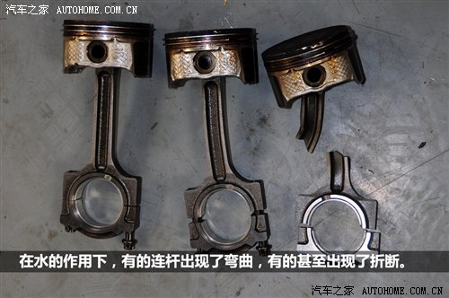

发动机进水及处理办法全解析
[汽车之家 技术] 上周六的大雨给北京带 来了一场前所未有的灾难，首先在文章开始之前，我先要向那些默默做出奉献的好心人表示一下敬意，在这能说的也只有这些了。在大雨过后，围绕汽车的话题也因 此展开，特别是在微博上，大家纷纷献计献策，有教你怎么自救的，有教你在车辆泡水时该怎么修的。当然，讨论最火热的也是争议最大的话题莫过于发动机进水（在文章写到一半时，如何自救成了微博第一热门话题），到底谁说的对？这篇文章可以告诉你，还有，发动机进水后怎么修能省钱（很多是需要自费的），总之，我们所讲的都是实在的。
● 发动机进水的过程
大雨滂沱的夜晚，司机刘师傅行驶在环路某低洼路段，他所驾驶的是一辆带有四驱功能的SUV车 型，凭借其高车身的优势，在此之前，他已经征服了不少别人望而却步的路段，这一次，他对眼前这条“河”同样充满信心，但刘师傅心里清楚，面前的境况显然不 同以往。好在他足够冷静，心中的那条涉水法则告诉他要保持低挡位行驶，油门踏板也要稳住，随着有更多的积水被车头慢慢推开，这条夺命深渊已经彻底将它包围 了起来，此时，再想挣脱已经不太容易了。
『图片来源于网络』
短暂的抖动后车辆失去了动力，但由于电路还接通着，从来自仪表的反馈来看，点亮的EPC警示灯伴随着阵阵蜂鸣警示音让这次熄火跟一次普通的发动机熄 火故障没什么两样，刘师傅下意识的就要摁下点火开关。在路灯的映照下，“湖面”泛起的粼粼微光，滚滚浪涛刚好把它反射到刘师傅的眼睛上，这一切都没能改变 刘师傅的主意，当它按下点火开关的瞬间会发生什么事？如果我坐在刘师傅的身边，我一定会阻止他的这一动作，在这里我们要明确说明，一旦你的车辆进入水中后熄火，一定不能尝试再次点火。因为你没有办法判断车辆熄火的原因。
车辆进水后熄火，有很多可能的原因：
1.发动机在低转速时由于排气管在水中，排气压力过大被憋灭；
2.空滤被打湿，进气不足而熄火（水还没有进入歧管内）；
3.发动机少量/大量进水，发动机无法正常工作/受损熄火。
因为身在大雨或涉水状态中，我们没有办法在车内判断究竟是什么原因导致了熄火，所以最可靠的办法就是不要再打任何发动机的主意，依靠外力将车辆移动至安全的地方。如果你执意要重新起动发动机，那么我们需要接着为你演绎可能出现的情况。这时候，你一定是已经为之后可能出现的大修做好心理准备了。
发动机在水中憋灭后（气缸内灌入了大量的水）再次点火会造成连杆弯曲以及更严重的后果吗？
答案是否定的！当车辆以较慢的速度涉水时，因积水灌入气缸会导致发动机被憋灭，此时，气缸内已经存有水，以常规思维来想，水是不可压缩的，这一定会造成连杆的弯曲甚至缸体的损伤，那我凭什么更大家唱反调呢？
因为在这种情况下，发动机曲轴可能根本转不动！在发动机被水憋灭的同时，气缸内部基本已经被水充斥了，由于水是不可压缩的，所以活塞几乎没有上行的空间，此时，即使你接通点火开关，起动机也根本转不动，就更别提给发动机造成损伤了。而且，这种情况下，发动机往往已经在熄火前因为大量进水已经造成了不可逆的内伤，你的“二次点火”无论成功与否都无法改变这一事实了。
连杆都是怎么弯的？（气缸内进入少量的水，发动机可“正常”启动）
很多情况下，车主都不知道发动机已经进水了，而恰巧进水量又不多（足以满足发动机的启动），在启动的瞬间，某个活塞上行完成点火前的压缩工作，几乎在同一时间，进气门关闭，于是，气缸内部便成了一个密封的空间，由于水是不可压缩的，待活塞上行至一定位置时会感到阻力明显增大，但其它正在做功的活塞所推动的曲轴是铁了心的要把这个活塞送到上止点位置，总之，水是不会做出让步的，相比之下连杆就变得脆弱得多（发生细微的变形），积水会在启动时随着排气门的开启排出缸体外，但它对连杆造成的伤害已成事实，弯曲的连杆在无形中降低了气缸的压缩比，并增加了发动机运行的阻力，因此车辆开起来也就会觉得不如原先有劲儿，而驾驶者可能并不知道气缸内发生的这一切，从驾驶者的角度来想，他会认为汽车力道不够，就会刻意的把油门踏板踩得更深些，用更高的转速来获取所要达到的动力。
连杆的细微弯曲会让活塞在气缸中的运行变得极为不稳定，而过高的转速则无疑加快了它恶化的脚步，同时，活塞在气缸中的摇摆不定也会加重连杆的弯曲程度，连杆弯曲的幅度越大，活塞在运行中的摆动就会更疯狂，直到最后，活塞环损坏、气缸壁损坏、活塞卡死在气缸中，而连杆也会因无法承受巨大的压力或弯曲或折断，更为严重的情况是折断的连杆直接将缸体刺穿。随即发动机失去动力，车辆也会在短距离的滑行过后停下来。
保险公司的定损员会根据这个特点为依据来判断受损车辆是否属于免赔范畴。反过来，我们也可以通过了解一些真实情况后来维护自己的利益，请接着往下看。
● 发动机为什么会把水吸到气缸中？
发动机进水的路径跟进气的路径基本是一样的，所以，在讲这个问题时要先弄明白发动机是怎么喘气的，在此可以先用一张厂家提供的进气效果图来展示，但你要把蓝色部分看做水才行。
空气（水）为什么会吸入气缸？
这听上去倒是像个哲学问题，的确，越基础的问题越不容易解答。在活塞下行的阶段会产生负压，随后通过进气门释放，如果你实在不能理解它，那就把它想象成一个没装针头的注射器，用手指堵住一头用力拉活塞推杆，这样你就可以感受到负压的存在了。
在转速稳定时，负压值也几乎是恒定的，当驾驶者踩下油门，节气门的摆动会扩大进气节流面积，此时，喷油量也会在发动机电脑的协同下做出修正，随即转速上升（活塞的往复运动瞬间加快），在这瞬间，负压值会出现大幅度的波动。在电脑程序里，它们之间所呈现出的是个函数关系。
水在吸入气缸之前还面临着一个选择，往哪个气缸走？这是水在成功闯过空气滤芯以及节气门后的第一次选择。进气歧管组成的岔路口通往各个气缸，以四缸发动机为例，虽然不会有两个气缸同时处于进气行程，在理论上会出现单一气缸进水的可能，不过，即便发动机在怠速工况下运转，800rpm左右的发动机转速也足以在瞬间将涌入进气歧管的水完全瓜分。
水与燃油交融后进入气缸，这个过程就好像注射器在吸纳药剂一样，此时的燃烧室从没有像现在一样被填得很满过，就这样，发动机被憋灭了。
● 水会从排气管进入气缸吗？
在发动机运转时，即便是积水没过排气管也无大碍，因为发动机的排气压力足以将积水推开。但在发动机熄灭后，若水位高于排气歧管的位置，那么积水一定会侵入到排气管中，并通过某个开启的排气门进入气缸，从而造成了发动机进水。
● 发动机进水后怎么修？
首先要大致判断发动机处于什么样的状态。情况基本分为三种，一，车辆在水里泡过后导致发动机进水，更重要的是直到车辆拖回修理厂发动机都没被启动过；二，车辆在水中行驶，由于发动机进水导致其熄火；三，发动机进水后（少量积水，不会阻止发动机启动），车主在不知情的情况下启动发动机并进行过一段距离的驾驶。这些问题我们是站在那些没有购买相应险种车辆的角度上进行讨论的，其实话又说回来，即便有相应的保险，到定损时也是本着能省就省的原则。
情况一：
如果车辆只是被过了一遍水（不是水中熄火，而是被水浸泡过），事后又是被拖到修理厂的（没有启动过发动机），这基本不会给发动机造成不可逆转的损伤，主要的工作是对于发动机内部积水进行清理，但要视情况考虑清洗程度，更多的是将进气管以及进气歧管拆下，利用压缩空气将里面的水吹干。
气缸内的积水可以将火花塞拆下后，再吹干。在微博上，有很多人都提到了这方面的事情，但所给出的处理方法（拆下火花塞，转动点火开关，利用起动机来驱动活塞的上下运动，使积水排出来）真的有待商榷，首先要承认的是，这样方法可以把积水排干净，但存在着一定的危险性，因为在整个过程中发动机电脑是按照正常的启动程序向各个执行部件发送指令的，喷油系统也不例外，虽然在活塞达到上止点时，排气门会打开，但仍有可能导致少部分燃油从火花塞安装孔位喷出，恰巧缸线因老化而漏电……如果你非要采用这种排水方法，那我建议你一定要把油泵的保险丝先拔了，这个保险丝有可能在发动机舱内的保险盒里，也有可能在司机侧仪表台下方，还有可能在仪表台左侧。
-- 灌入气缸中的水会流油底壳回吗？
在确定发动机不必遭受解体之苦后，事情还没结束，气缸内的积水会跟着机油一起流回油底壳吗？
首先要说的是，气缸内是具备一定气密性的，其中，活塞环起到了活塞与气缸壁之间的密封作用，除了密封，活塞环还可以刮掉气缸壁上多余的机油，防止过量的机油蹿入燃烧室，造成机油的过度损耗，但随着车辆行驶里程的增加，气缸壁会出现一定程度的磨损，从而造成气缸与活塞配合间隙变大，因此引发的常见故障为烧机油。而对于积水会不会流回油底壳的问题，我们还真不好妄下定论，因为车辆的使用情况不同，磨损情况也会不同，这其中存在的客观原因无法被掌控，所以，我们还是告诉大家简单的判断方法最直接。
我们可以利用机油尺来得知机油的状态，如果机油尺蘸上的机油呈现出乳白色，那基本可以确定润滑系统进水，这就要对机油机滤进行彻底更换，如果有条件的话还可以使用专门清洗发动机润滑系统的产品进行清洗。
机油尺蘸上来的机油颜色正常就高枕无忧了吗？
很多人都有这样的误区，当机油灯报警时，车主拔出机油尺发现测量油位高低的刻度上已经蘸不到机油了，就误以为发动机内的机油已消耗殆尽，其实，机油尺所能蘸到的机油只是漂浮在最上层的部分，对于大多数车来说，机油尺刻度的范围实际上测量的机油量在1升左右，换言之，即便当机油尺刚好蘸不到机油时，油底壳里依旧会存有一定量的机油以维持发动机润滑系统的工作。
我们都知道，油和水是不相容的，当发动机静止了一段时间后，会形成油、水分层，因密度的缘故，机油会浮在上面。看完上面的分析，我想你心中也有答案了。所以，在发动机完成了积水的清理后，即使初步检查无异常，也需要让发动机短暂运转一段时间后，灭车再拔出机油尺来看机油状态，最终排除润滑系统进水的可能。
情况二：
如果你的车是在水中被憋灭的，维修技师大多会建议你授权让他们对发动机进行拆解，的确，这真的很难通过简单的办法来判断出连杆是否在这次非正常熄火的过程中被压变形（上文说到，细微的变化也足以给气缸造成致命的损伤）。
『从这两张动态图片你会发现，在发动机运转过程中，至少两个气缸处于同样的工作进程中，而我们恰巧可以利用发动机的这一工作特性来检测连杆的状态。』
通过卡尺的测量可以比较出两个同处一个行程的活塞到气缸上沿的距离，如果二者在数值上存在差异，数值大的一方就有可能是连杆出现变形，当然，也有可能是二者都有问题，这需要通过旋转曲轴把两个活塞处于上止点位置，看活塞的边缘是否与气缸上沿齐平来进一步确认。经过逐一排查，完全可以确定哪个气缸的连杆出现了问题，以便有的放矢的订购相关配件，但对于维修技师来说，为了能达到更好的维修效果，他们则主张更换全部连杆及活塞。
当然，如果经检查确认所有气缸都没有出现异常问题，那自然皆大欢喜，将发动机组装完毕后更换相应油液即可。这里也要大家要特别注意，不是泡过水或者发动机进水导致了熄火都要对连杆、活塞进行更换的，要因实际测量的结果来定夺。
情况三：
发动机进水后（少量积水，不会阻止发动机启动），车主在不知情的情况下启动发动机并进行过一段距离的驾驶。你已经猜到了最坏的可能，那又该如何确定这一猜测呢？
如果不能用扳手转动曲轴则可以初步判断为连杆严重受损，拆解后，视情况要对发动机缸体、连杆以及活塞进行整体更换。具体检测办法与情况二中所描述的相同，在此便不再赘述。

有关涉水车辆如何进行保险理赔的问题，我们用车频道的同事在之前已经做过了非常详尽的解读，如果你不清楚相关事宜，可点击下面的链接进行查看（但我建议你 最好先接着把本文后面的内容看完），不过从我这两天的实地走访来看，那些泡水车辆只要所上险种齐全，大家还是可以得到一个很好的理赔方案的。
● 没电了P挡就摘不下来了吗？
下雨当天，在微博上看到有人求救，他的车在过水之后供电系统瘫痪，导致P挡摘不下来，因此，他不得不在大雨中耐心的等待道路救援的拖车前来营救（P挡状态下，驱动轮无法旋转）。不过那天的情况想必大家都清楚，干等着确实不是事。
对于自动挡车型而言，在正常情况下，我们踩下刹车并按下换挡杆上的锁止按钮，就可以将换挡杆拉至你所需要的挡位，不过，刹车信号是通过刹车开关（刹车灯便 是由这个开关控制）传递电信号给变速箱电脑的，变速箱电脑再向挡位锁止模块发出指令，使其释放限位卡扣，但由于整个传递都要依靠电作为介质，所以，一旦没 电，这套控制流程就作废了。
与编程人员一样，汽车工程师也喜欢给自己留个后门，几乎所有的自动挡车型都设有P挡解锁的应急开关。在哪能找到它？一定是在换挡杆附近，只不过，有些工程 师喜欢把它设计在明面上，使用起来更直接，但有些工程师或许认为把它隐藏在角落里才不会影响到内饰造型的完整性。
● 变速箱会进水吗？
变速箱在工作的过程中会产生一定的气体，大量的气体积聚后会使内部压力上升，这样的环境显然不利于变速箱的工作，为了解决这个问题，工程师在变速箱壳体处设置了透气孔，从根本上来说，这个透气孔实则是个单向阀，就好像高压锅上的泄压阀一样，在正常的情况下，阀门关闭，而当内部压力上时，单向阀会被顶开进行泄压。
因此，从设计结构来看，变速箱是不太容易进水的。但凡事都不绝对，如果这个阀门被异物卡住无法恢复到关闭状态，当积水没过变速箱最高位时，水就会通过这个透气孔进入到变速箱内。
变速箱进水后会发生什么事？
当变速箱油掺水后，变速箱油的性能会受到严重的影响，不仅仅是润滑性能受损，变速箱油的传递动力的性能也会下降，进而使离合器片出现打滑，随即油温升高，这也会导致水蒸气的产生甚至使油水混合物出现沸腾，这些粘稠的物质还会堆积到阀体内造成阀体的堵塞，从而影响到变速箱的控制系统。
在泡水后，如果你发现车辆挂挡不走，又或者加油时出现异常的抖动，我劝你最好还是立刻停车，否则会导致摩擦片以及其它传动机构出现损伤。
进水后该怎么办？
最为稳妥的办法是在车辆被水泡过后，及时对变速箱油进行彻底的更换，从根本上规避上述情况的发生，我能所想到的解决方案也就只有这些了，对于那些配备了变速箱油尺的车型来说，你可以套用上面说到的检查机油的办法来判断变速箱是否进水。
编辑总结：
起初，微博中在你所关注的人群里有很多人都在谈论或转发着一些如何处理泡水车的办法，而当得知这次大雨造成多人伤亡时，大家的注意力又都投向了如何自救的 问题上，那些人云亦云的说法随处可见。今天，哦不，确切地说应该是昨天，我们对使用何种破窗工具以及如何有效地使用破窗工具进行了全方位的试验，把真相还 原给了大家。而我写这篇文章的目的同样如此，首先，我希望可以重新建立大家对发动机进水这件事的认识，至少您能明白二次启动的关键在哪，这样才不会因人为原因给发动机造成损伤，其次，也是更为重要的，就是如果没上涉水险，发动机进水后怎么修能省点钱，如果您对这些内容毫无印象，我希望您可以再翻回去大致浏览一遍。如果觉得文中所提到的内容不能帮助到您，采用以下途经都可以给我留言。（摄/汽车之家 张弓然 图文/汽车之家 李博旭）
2012年07月25日 03:15 来源：汽车之家
|